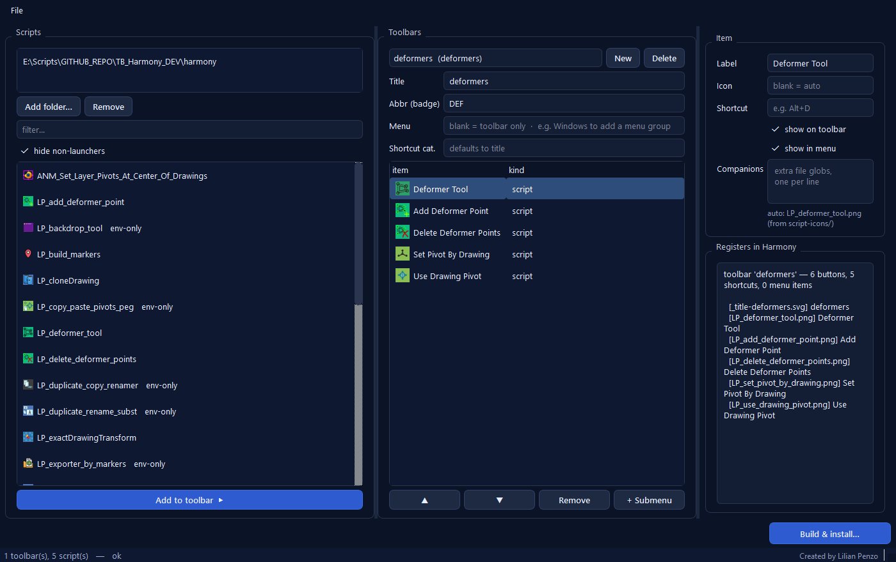

One package
All your toolbars live in a single Customize_Toolbars folder. Buttons, assignable shortcuts, and an optional Windows-menu group.
Turn your Harmony scripts into toolbars — buttons, shortcuts and an optional menu — without hand-writing a configure.js. Arrange the toolbar in a small desktop app; it produces a drop-in Harmony package.
Harmony can show a script as a toolbar button, but wiring one up means a package, a configure.js, an action, a shortcut and a menu item — repeated per button. Customize Toolbars does that for you: you pick scripts, drag them into a toolbar, set a label / icon / suggested shortcut, and it writes a self-contained package.

All your toolbars live in a single Customize_Toolbars folder. Buttons, assignable shortcuts, and an optional Windows-menu group.
The package bundles copies of the scripts and icons it uses, so it works on a machine that only has the roaming folder.
The right panel runs the real engine and shows exactly what will be registered, plus warnings for missing scripts or portability issues.
Re-open an installed package, change it, and save straight back over it. Or uninstall it from one click.
21 and later (tested on 24, 25, 27). Premium / Advanced.
Windows. The builder is a Python app; nothing extra is installed inside Harmony.
Python 3.9+ (the version Harmony ships). run.bat sets up a local environment on first launch.
customize-toolbars/ folder from the repository.run.bat. The first run creates a local .venv and installs three packages (dukpy, jsonschema, PySide6).my_tool_*.py)..lptb.json you can reopen.The full user guide covers every field, the CLI, and editing an installed package.
One folder in %APPDATA%\Toon Boom Animation\<edition>\<NNNN>-scripts\packages\:
Customize_Toolbars/
configure.js what Harmony runs at startup
engine/ the small runtime (don't edit)
toolbars/*.json one file per toolbar
scripts/ copies of the launched .js (+ companions)
icons/ script icons and generated badgesIn the interface: a letter-badge button for the toolbar, then one button per script with its icon and tooltip; an assignable entry per script under Preferences ▸ Keyboard Shortcuts; and, if you opted in, a matching menu group. Nothing else in the scene or preferences changes.
Toolbars are built when Harmony launches. After Build & install, restart Harmony.
Harmony doesn't let a script set a key combo. The tool registers an assignable entry; you pick the key in Preferences. The Shortcut field is a note shown in its description.
Harmony's toolbar API has none. Use a submenu (menu only) to group.
Scripts that find their .py through the TOONBOOM_GLOBAL_SCRIPT_LOCATION variable are flagged. They work while that variable is set on the machine.
Right-click the toolbar area to enable it, or check Windows ▸ toolbars. The Message Log shows a [Customize_Toolbars] line per toolbar loaded.
Run run.bat locations to see which packages/ folders are detected and writable.
| Version | Date | Changes |
|---|---|---|
| 1.0.0 | 2026-09 | First public release: engine, PySide6 builder, multi-version install, editing an installed package. |